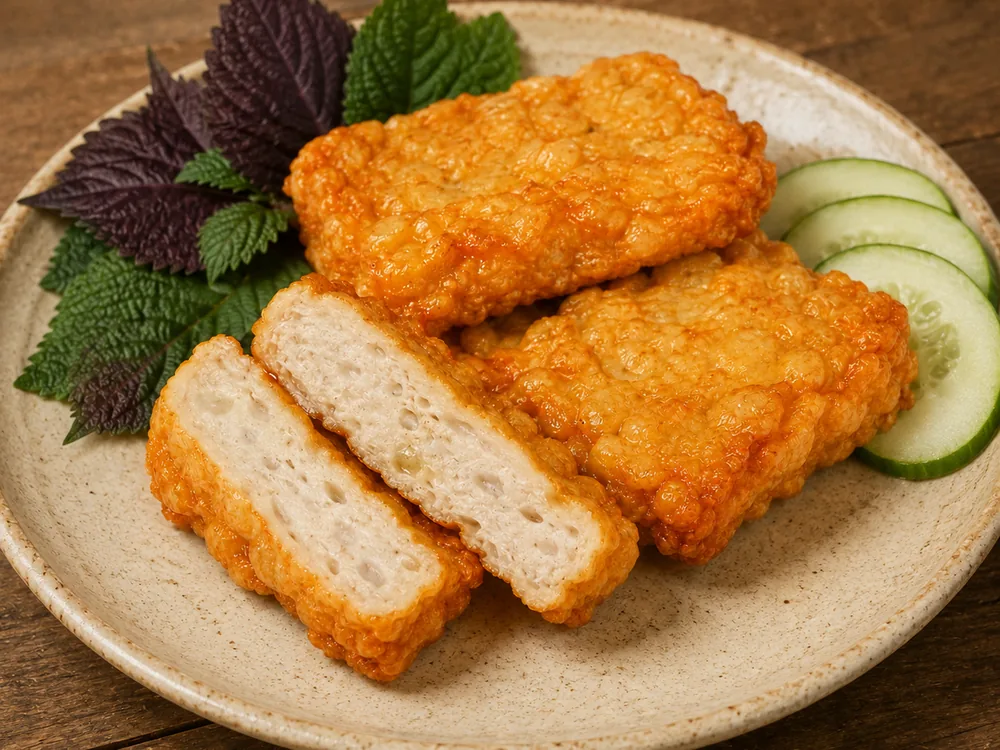

Chả cốm nhà Cô Huệ ít cốm, và đó là cố ý

"Chả cốm gì mà không thấy hạt cốm?" — cắt miếng chả ra thấy ruột trắng ngà, nhiều khách hỏi đúng câu đó ngay tại bàn.
Không phải quán làm sai. Miếng chả cốm ở đây ít cốm là chọn có chủ ý, và quán chọn như vậy sau khi đã thử làm ngược lại.
Đợt trước quán bán loại nhiều cốm hơn. Nhìn thì đúng kiểu người ta hình dung về chả cốm: cắt ra lấm tấm hạt xanh, ảnh chụp lên đẹp. Nhưng ăn thì khác. Cốm chiếm chỗ của giò sống, nên phần chả mỏng lại, cắn vào bã và nhạt. Khách chê. Chê không phải vì miếng chả dở, mà vì họ gọi thêm một đĩa 30.000 để ăn chả, và cái nhận được lại nghiêng về phía cốm.
Nên quán đổi sang loại ít cốm hơn. Cốm giữ vừa đủ để dậy mùi thơm đặc trưng — thiếu hẳn thì món này không còn là chả cốm nữa — còn phần thịt thì dày lên. Cắn vào chắc miệng, có cái để nhai, ăn kèm bún và mắm tôm không bị chìm. Đổi lại, miếng chả bưng ra trông "bình thường" hơn hình dung của nhiều người: mặt ngoài vàng sần, ruột trắng ngà, phải để ý mới thấy cốm.
Đó là cái đánh đổi quán chấp nhận. Món trên bàn ngon hơn món trên ảnh, và với một quán bán ăn thì thứ tự đó là đúng. Cũng vì vậy mà ảnh chả cốm trên trang này không bao giờ được chỉnh cho lộ hạt cốm: chụp một đằng bưng ra một nẻo thì lần sau khách không quay lại.
Chả cốm 30.000 một đĩa, thêm vào mâm bún đậu là vừa. Ai ăn lần đầu, gọi thêm một đĩa chả cua hoặc nem chua rán để so — ba loại ba kiểu, dễ biết mình hợp cái nào.
Quán mở 15h30 – 21h, E1A Cư xá Phú Lâm B, P. Phú Lâm.
← Xem các chuyện khác